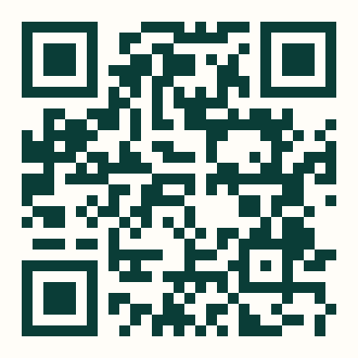

cm
Cedric Milles
Para centros educativos
Charlas y talleres
para vuestro colegio.
Orientación y desarrollo personal para que el alumnado estudie mejor, las familias se sientan acompañadas y el claustro hable el mismo idioma.
Alumnado · Familias · Claustro
- Encuentros con familias Autoestima, límites, pantallas y cómo acompañar sin sobreproteger.
- Talleres con alumnado Método de estudio, emociones, autonomía y criterio propio.
- Formación de claustro Un mismo rumbo entre casa y escuela. Herramientas concretas para el aula.
- Acompañamiento puntual Cuando un alumno, una familia o un grupo necesita un empujón claro.

Hablemos de vuestro centro
WhatsApp 658 406 157 cedricmilles.comCuéntame qué necesita el colegio y preparamos una propuesta.